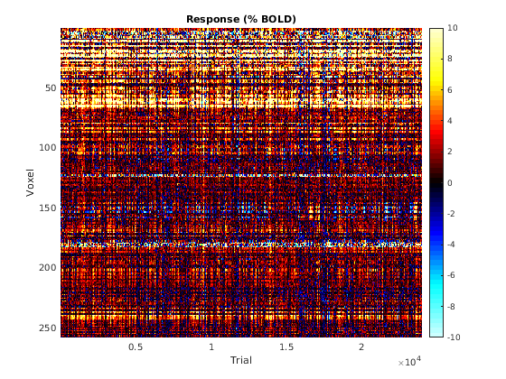
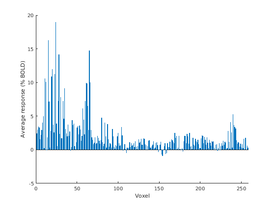
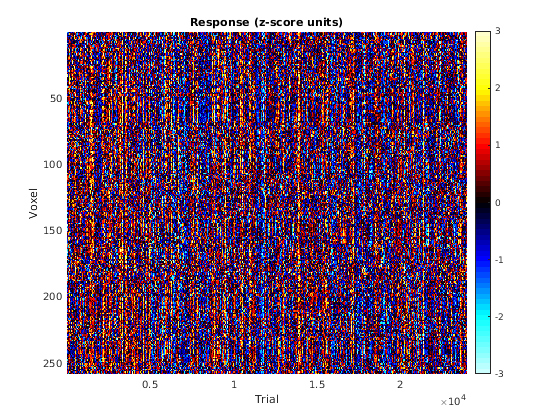
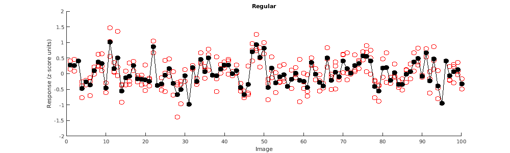
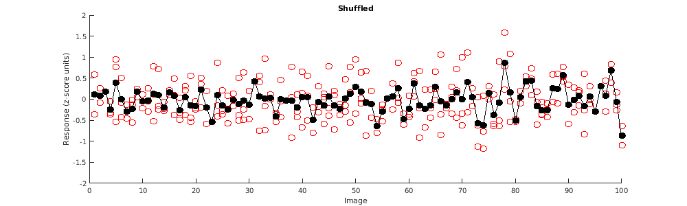
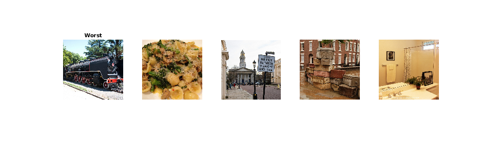

Example 6: Basic loading and inspection of NSD betas
Contents
Introduction
General setup
stimfile = '~/nsd/nsddata_stimuli/stimuli/nsd/nsd_stimuli.hdf5';
expfile = '~/nsd/nsddata/experiments/nsd/nsd_expdesign.mat';
subjix = 3;
nsess = 32;
betaver = 'betas_fithrf';
Define ROI
a1 = load_untouch_nii(sprintf('~/nsd/nsddata/ppdata/subj%02d/func1pt8mm/floc_facestval.nii.gz',subjix));
lrix = 58:66;
paix = 31:54;
isix = 25:32;
boxvol = zeros(size(a1.img));
boxvol(lrix,paix,isix) = 1;
mask = boxvol & a1.img > 5;
[d1,d2,d3,ii] = computebrickandindices(mask);
Load in the betas
data = [];
for p=1:nsess
fprintf('sess %d...',p);
file0 = sprintf('~/nsd/nsddata_betas/ppdata/subj%02d/func1pt8mm/%s/betas_session%02d.mat',subjix,betaver,p);
a1 = matfile(file0);
temp = double(a1.betas(d1,d2,d3,:))/300;
temp = squish(temp,3);
temp = temp(ii,:);
data(:,:,p) = temp;
end
sess 1...sess 2...sess 3...sess 4...sess 5...sess 6...sess 7...sess 8...sess 9...sess 10...sess 11...sess 12...sess 13...sess 14...sess 15...sess 16...sess 17...sess 18...sess 19...sess 20...sess 21...sess 22...sess 23...sess 24...sess 25...sess 26...sess 27...sess 28...sess 29...sess 30...sess 31...sess 32...
Inspect the data
figure; hold on;
imagesc(reshape(data,size(data,1),[]),[-10 10]);
axis ij tight;
colormap(cmapsign4); colorbar;
xlabel('Trial');
ylabel('Voxel');
title('Response (% BOLD)');

figure; hold on;
bar(mean(mean(data,2),3));
xlabel('Voxel');
ylabel('Average response (% BOLD)');

dataZ = calczscore(data,2);
figure; hold on;
imagesc(reshape(dataZ,size(dataZ,1),[]),[-3 3]);
axis ij tight;
colormap(cmapsign4); colorbar;
xlabel('Trial');
ylabel('Voxel');
title('Response (z-score units)');

Load in experiment information
exp1 = load(expfile);
theorder = exp1.masterordering(1:750*nsess);
uniqueix = union(theorder,[]);
length(theorder)
length(uniqueix)
ans =
24000
ans =
9411
Visualize ROI-averaged responses
numtodo = 100;
dataZ = reshape(dataZ,size(dataZ,1),[]);
todo = picksubset(uniqueix,numtodo);
versions = {'Regular' 'Shuffled'};
for ver=1:2
figureprep([100 100 1000 300],1); hold on;
avgresp = [];
for p=1:length(todo)
switch ver
case 1
ix = find(theorder==todo(p));
case 2
ix = find(permutedim(theorder==todo(p)));
end
yy = mean(dataZ(:,ix),1);
scatter(repmat(p,[1 length(yy)]),yy,'ro');
avgresp(p) = mean(yy);
end
h = plot(1:length(todo),avgresp,'ko-');
set(h,'MarkerFaceColor','k');
ax = axis;
axis([ax(1:2) -2 2]);
xlabel('Image');
ylabel('Response (z-score units)');
title(versions{ver});
end
 
Look at best and worst images
newdata = [];
newdatastim = [];
for p=1:length(uniqueix)
ix = find(theorder==uniqueix(p));
if length(ix)==3
newdata(:,end+1) = mean(dataZ(:,ix),2);
newdatastim(end+1) = uniqueix(p);
end
end
[ss,ssix] = sort(mean(newdata,1),'descend');
strs = {'Best' 'Worst'};
for flag=1:2
figureprep([100 100 1000 300],1);
for p=1:5
switch flag
case 1
id73k = exp1.subjectim(subjix,newdatastim(ssix(p)));
case 2
id73k = exp1.subjectim(subjix,newdatastim(ssix(end-p+1)));
end
im = permute(h5read(stimfile,'/imgBrick',[1 1 1 id73k],[3 425 425 1]),[3 2 1]);
subplot(1,5,p);
imshow(im);
if p==1
title(strs{flag});
end
end
end
